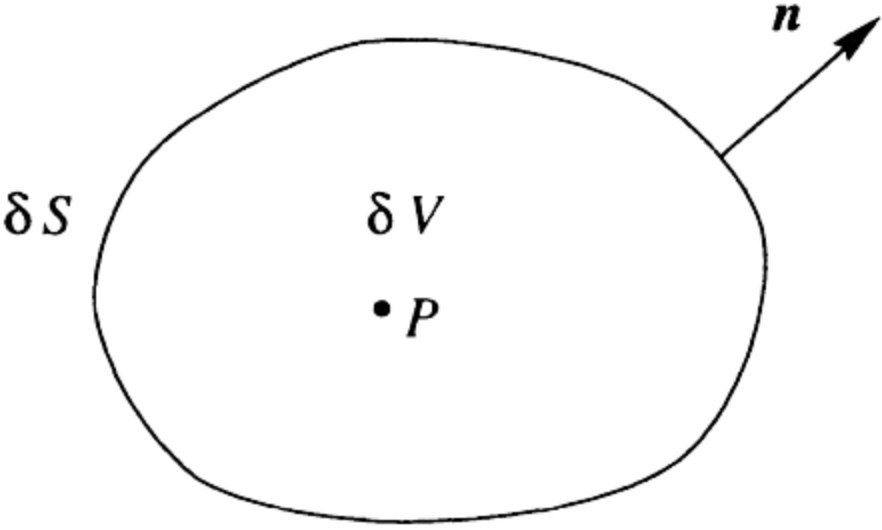
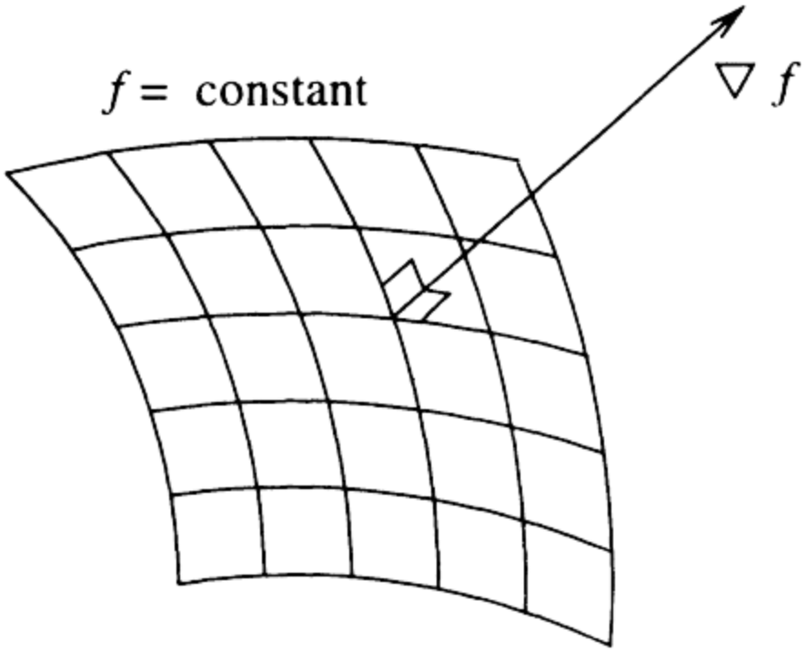

Both the divergence and curl are vector operators whose properties are revealed by viewing a vector field as the flow of a fluid or gas. Imagine a fluid flowing with velocity field \( \mathbf{u} \), where the fluid appears to be expanding outward from the origin The divergence of this vector field is positive, indicating expansion. Conversely, if the fluid compresses toward the origin, the divergence is negative
Gradient Definition: The gradient of a scalar field \( f \) can be written as grad \( f \), a special symbol for grad, \( \nabla \), is used, so grad \( f = \nabla f \) The gradient of \( f \) can also be defined in a Cartesian coordinate system in terms of the partial derivatives of \( f \), \(\boxed{ \nabla f = \frac{\partial f}{\partial x} \mathbf{e}_1 + \frac{\partial f}{\partial y} \mathbf{e}_2 + \frac{\partial f}{\partial z} \mathbf{e}_3} \)
Laplacian Operator: Suppose that a scalar field \( \phi \) is twice differentiable. Then the gradient of \( \phi \) is a differentiable vector field \( \nabla \phi \), so we can take the divergence of \( \nabla \phi \) and obtain another scalar field. This scalar field \( \nabla \cdot \nabla \phi \), is called the Laplacian of \( \phi \) and has its own symbol, \( \nabla^2 \phi \), so \[ \nabla \cdot \nabla \phi = \nabla^2 \phi \] \[ \nabla^2 \phi = \frac{\partial}{\partial x} \left( \frac{\partial \phi}{\partial x} \right) + \frac{\partial}{\partial y} \left( \frac{\partial \phi}{\partial y} \right) + \frac{\partial}{\partial z} \left( \frac{\partial \phi}{\partial z} \right) = \frac{\partial^2 \phi}{\partial x^2} + \frac{\partial^2 \phi}{\partial y^2} + \frac{\partial^2 \phi}{\partial z^2} \] The Laplacian can also act on a vector quantity, in which case the result is a vector whose components are the Laplacians of the components of the original vector \[ \nabla^2 \mathbf{u} = \left( \nabla^2 u_1, \nabla^2 u_2, \nabla^2 u_3 \right) \]
1P. C. Matthews, Vector Calculus, New York:Springer-Verlag, 1998.